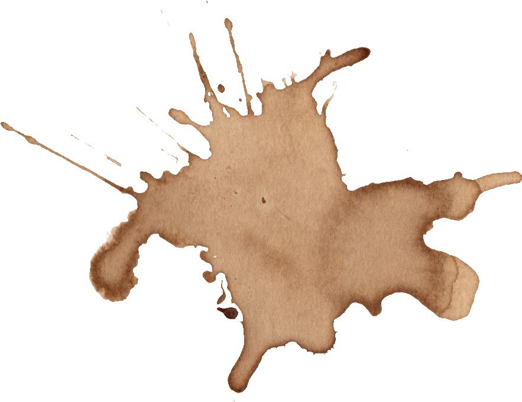
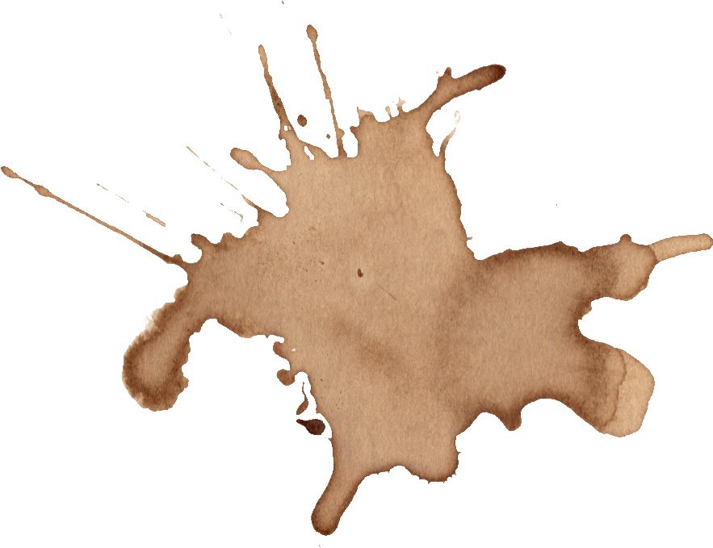

2 septembre 2023
Cher journal,
Aujourd’hui c’est la rentrée et je ne sais pas vraiment pourquoi j'ai décidé de t'écrire mais
j’essaie de partir du bon pied cette année ou peut-être juste parce que j'ai l'impression que
personne d'autre ne pourrait vraiment comprendre. Pas Claire, pas ma famille, personne. Alors, je me
tourne vers toi, comme si mettre mes pensées sur papier pouvait rendre tout ça un peu moins réel, ou
au contraire, plus supportable.
Tu es la seule chose qui n’attend rien de moi. Les mots ici ne jugent pas, ils ne demandent pas de
sourire, de faire semblant, d’aller bien. Ils sont juste là, comme un miroir de ce que je ressens à
l’intérieur. J’ai essayé de tout garder en moi pendant trop longtemps, mais ça devient trop lourd à
porter seule.
Je ne peux pas parler à mes amis. Ils ne comprendraient pas ce que c’est de se réveiller chaque jour
avec cette angoisse qui me serre la gorge, cette impression que tout ce que je fais est inutile, que
personne ne me voit vraiment. Alors, je me confie à toi. Peut-être qu’écrire me permettra de faire
le tri dans tout ce chaos dans ma tête.
Je n'attends pas de solution, juste de poser tout ça quelque part, parce que sinon, je vais finir
par exploser. Toi, au moins, tu m'écoutes en silence, sans essayer de me réparer, sans dire que "ça
ira mieux". Peut-être qu'il y a des choses qui ne vont jamais mieux.
Alors voilà pourquoi j'écris. Parce que c’est la seule manière que j’ai trouvée de ne pas sombrer
complètement.
5 septembre 2023
Aujourd'hui, je me suis levée avec cette même lourdeur sur la poitrine. Comme si
respirer demandait
un effort colossal. Je n’ai pas eu la force de sortir du lit avant midi. Je suis restée là, fixant
le plafond, me demandant comment j’en suis arrivée là. À quoi bon essayer ? Personne ne remarque
vraiment ma présence de toute façon.
Je ne ressens plus rien. Juste ce vide, ce gouffre en moi qui m’aspire un peu plus chaque jour.
7 septembre 2023
Je pensais que ça irait mieux aujourd’hui. Peut-être qu’un café et un peu d'air
frais m’aideraient.
Mais même ça n'a rien changé. J’ai croisé des gens dans la rue, certains souriaient. Comment
peuvent-ils sourire comme ça ? Je me suis sentie complètement déconnectée, comme si je vivais dans
un monde parallèle. Leurs rires me déchirent, comme si j’étais une étrangère parmi les vivants.
Je me suis enfermée chez moi, seule. Encore.
10 septembre 2023
Je ne me souviens même pas de la dernière fois où j’ai vraiment parlé à quelqu’un.
Quand les gens
me demandent comment je vais, je mens. Je dis "ça va". Parce qu’ils ne veulent pas vraiment savoir.
Ils fuiraient si je leur disais ce qui se passe dans ma tête. Ils ne comprendraient pas.
Je n’arrive plus à cacher ma douleur. C’est comme si elle débordait, m’écrasait de l’intérieur.
14 septembre 2023
Je n’ai plus d’énergie. Je me lève, je mange un truc sans goût, je passe des
heures à essayer de dormir sans succès. Chaque journée se ressemble. Vide, sans but. Je m’éteins
doucement, mais personne ne le remarque.
Aujourd’hui, j’ai pensé au pont. J’ai marché jusqu’à là-bas, et je me suis assise, regardant l’eau
en dessous. Juste pour voir.
Peut-être que ce serait plus simple de disparaître. Peut-être que ce serait une solution.
20 septembre 2023
Je n’en peux plus. Tout semble si lourd, si inutile. Il n’y a plus de lumière.
Juste cette ombre qui grandit en moi. Je ne veux plus lutter, c'est trop difficile. Plus personne ne
pourra m’aider. J’ai écrit une lettre, pas pour m’excuser, mais pour expliquer que c’est mieux
ainsi. Je suis désolée pour ceux qui resteront. Mais c’est la seule issue qui me semble logique
maintenant.
Demain, je n’aurai plus à ressentir tout ça.
3 octobre 2023
Je n’ai pas écrit depuis un moment. Je pensais que je n’en avais plus besoin, que
ça allait enfin mieux. J'ai réussi à sortir avec Claire l’autre jour. Elle m’a traînée dehors,
presque de force, mais je dois avouer que ça m’a fait du bien. Le soleil sur ma peau, les gens
autour de moi... Pour un instant, j’ai presque cru que tout ça était derrière moi.
On a ri, on a parlé de tout et de rien. Elle m'a dit que j'avais l'air plus vivante, plus présente.
Je l'ai presque crue. Je pensais que peut-être, cette fois, j’allais m’en sortir.
Mais ce n’était qu’une illusion.
15 octobre 2023
Je sens que ça revient. Comme une vague qui monte inexorablement, prête à me
submerger. Tout ce que j'avais cru enterrer, tout ce mal-être, cette douleur... C’était juste le
calme avant la tempête. J'avais cru pouvoir échapper à tout ça. Mais non. C’est là, toujours là,
tapi dans l’ombre, attendant que je baisse ma garde.
Claire continue de m’appeler, de m’envoyer des messages, mais je ne réponds plus. Elle ne
comprendrait pas. Comment pourrais-je lui expliquer que cet espoir que j’avais ressenti, ce
mieux-être, n’était qu’un mensonge ? J’ai l’impression que je suis revenue au point de départ, mais
cette fois, c’est encore plus fort.
20 octobre 2023
Le vide est revenu. Plus grand, plus lourd que jamais. J'ai fait semblant d'aller
mieux, j'ai même réussi à sourire, mais maintenant, ça n’a plus aucun sens. J’ai fait de mon mieux,
j’ai essayé de tenir. Mais à quoi bon ? C'est comme si tout l’air avait été aspiré de la pièce,
comme si j’étouffais à nouveau, encore plus violemment qu’avant.
Je n’ai plus envie de lutter. Cette fois, je sais que c’est la fin.
25 octobre 2023
C’est drôle, j’ai l’impression d’avoir trouvé la paix. Pas celle qu’on cherche
toute une vie, mais une paix silencieuse, celle qui te dit que bientôt, tout sera fini. J’ai
pris ma
décision, et bizarrement, ça m’a soulagée. Depuis que je sais que ce sera terminé bientôt, je me
sens plus légère. Plus besoin de lutter contre moi-même, plus besoin de me forcer à vivre dans
un
monde qui ne veut pas de moi.
Hier, j’ai vu Claire. Elle était tellement contente de me voir sourire. Elle a dit que ça
faisait
plaisir de me retrouver, que je semblais enfin heureuse. J’ai même ri à une de ses blagues. Elle
m'a
serrée dans ses bras et m'a dit qu'elle savait que je pouvais m'en sortir. Je l’ai laissée
croire à
ça. Je ne voulais pas qu’elle s’inquiète. C’était plus facile de lui montrer ce masque, de la
laisser penser que tout allait bien.
Elle ne se doute de rien. Comment pourrait-elle comprendre que ce sourire n’était pas un signe
de
guérison, mais d’abandon ? Elle croit que je vais mieux, que je suis sur la voie de la guérison.
Mais en réalité, j’ai juste accepté que c’est bientôt fini.
..
Je sens que tout est prêt. Je me suis préparée, tout est en ordre. J’ai dit adieu, sans que
personne ne le sache. Claire, si tu lis ça un jour, sache que je t'aime vraiment. Tu m’as
apporté plus que tu ne le penses. Mais ce n’est pas ta faute si je pars. C’est juste que j’ai
trop longtemps traîné cette douleur. Et maintenant, je vais enfin être en paix.
Je souris encore en écrivant ces lignes. Pas parce que je vais mieux, mais parce que je sais que
bientôt, ça ne fera plus mal. Bientôt, ce sera fini.
Et pour la première fois depuis longtemps, je me sens légère.
 
